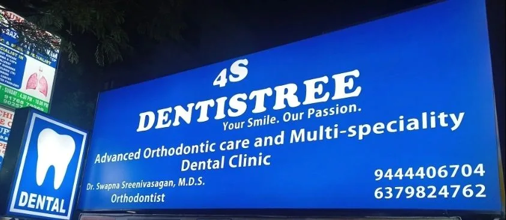

9 October 2026

Table of Contents
Looking for a Dental Clinic in Mogappair? Meet 4S Dentistree Why 4S Dentistree Stands Out Among Dental Clinics in Mogappair Dental Services at 4S Dentistree What to Expect on Your First Visit Signs It's Time to See a Dentist Simple Habits for Healthy Teeth Between Visits How to Find 4S Dentistree in Mogappair East Frequently Asked Questions Book Your Visit to 4S Dentistree Today
Looking for a Dental Clinic in Mogappair? Meet 4S Dentistree
A toothache rarely waits for a convenient time. Neither does the wish for a straighter, brighter smile. When you need care, you want a dentist close to home who listens, explains clearly and treats you gently.
If you live in Mogappair, Anna Nagar West, JJ Nagar or nearby, 4S Dentistree is a dental clinic built around exactly that. Located on 120 Feet Road in Mogappair East, the clinic offers complete family dentistry under one roof, from routine check-ups to advanced orthodontic care.
The clinic's promise is simple: Your smile. Our Passion. In this guide, you will learn what makes 4S Dentistree a trusted dental clinic in Mogappair, which treatments it offers, and how to plan your first visit.
Why 4S Dentistree Stands Out Among Dental Clinics in Mogappair
Mogappair has many dental clinics. Here is why families keep choosing 4S Dentistree.
Specialist-led care. The clinic is led by Dr Swapna Sreenivasagan, M.D.S (Orthodontics), PhD, who completed her postgraduation and doctorate at Saveetha Dental College. Having an orthodontic specialist on site means braces, aligners and bite correction are planned by someone who does this work every day.
Certified Invisalign provider. Adults who want straighter teeth without metal braces can get clear aligner treatment directly at the clinic.
Care for the whole family. Children, teenagers, adults and seniors can all be treated in one place. That saves you from juggling appointments across different clinics.
Flexible payment. EMI options are available for larger treatments, so cost does not have to delay the care you need.
Open seven days, until 9 PM. Busy work hours and school runs make daytime appointments hard. Evening slots make it easier to fit a visit into your week.
Patients feel at ease. Reviewers often mention the friendly atmosphere, clear explanations of their dental problems, and gentle, comfortable procedures.
Dental Services at 4S Dentistree
4S Dentistree covers everyday dental needs as well as specialist treatments. Here is a quick overview.
Treatment
Who it helps
Check-ups and teeth cleaning
Everyone, as routine prevention every six months
Fillings and extractions
Patients with cavities or damaged teeth
Braces and mini-implants
Children, teens and adults with crooked teeth or bite problems
Invisalign clear aligners
Adults who want discreet teeth straightening
Orthognathic surgery with braces
Patients with jaw alignment issues
Dental crowns
Teeth weakened by decay or after a root canal
Bridges and complete dentures
Patients replacing one or more missing teeth
Dental implants
Patients who want a fixed, long-lasting tooth replacement
Veneers
Mild gaps, discolouration or uneven tooth shape
Early childhood caries treatment
Young children with tooth decay
Knocked-out tooth care
Dental injuries that need urgent attention
Orthodontics for every age
Straightening teeth is the clinic's speciality. Braces remain a reliable choice for children and teens. Adults often prefer Invisalign, which is nearly invisible and removable for meals. For complex cases, the team combines braces with mini-implants or jaw surgery to create a balanced, confident smile.
Replacing missing teeth
A missing tooth affects chewing, speech and confidence. Implants replace the tooth without relying on neighbouring teeth and help prevent bone loss. Bridges and dentures are good alternatives, depending on your needs and budget.
Children's dental care
Decay in baby teeth is an active infection. If left untreated, it can harm the adult teeth developing beneath and reduce the space they need to come through. Early treatment protects your child's future smile.
What to Expect on Your First Visit
Many people delay the dentist because they feel unsure about what will happen. At 4S Dentistree, your first appointment is relaxed and straightforward.
A warm welcome. The front desk notes your details and any concerns you want to discuss. A conversation first. The dentist asks about your dental history, current problems and goals for your smile. A thorough examination. Your teeth, gums and bite are checked. X-rays or scans are taken only if needed. A clear explanation. You learn what is happening in your mouth and the treatment options available, in plain language. A plan that suits you. You receive an outline of the treatment, the timeline and the cost, including EMI options for larger procedures.
Tip: Bring any old dental reports or X-rays, plus a list of medicines you take. This helps the dentist plan safer, faster care.
Signs It's Time to See a Dentist
Small dental problems are easier and cheaper to fix early. Book a visit to a dental clinic in Mogappair soon if you notice any of these:
Tooth pain or sensitivity to hot, cold or sweet foods Bleeding, swollen or receding gums Bad breath that does not go away with brushing A chipped, cracked, loose or knocked-out tooth Crooked teeth, gaps or a bite that feels uneven Difficulty chewing, or jaw pain and clicking Dark spots or holes on your child's teeth More than six months since your last check-up
If a tooth is knocked out, hold it by the crown, not the root, and keep it moist in milk. Then contact the clinic straight away.
Simple Habits for Healthy Teeth Between Visits
Good dental care continues at home. These everyday habits protect your smile between appointments:
Brush twice a day for two minutes with fluoride toothpaste and a soft-bristled brush. Clean between your teeth daily with floss or interdental brushes. Cut back on sugary snacks and drinks, including sweetened tea, coffee and juices. Drink water after meals to rinse away food particles. Replace your toothbrush every three months, or sooner if the bristles fray. Wear a mouthguard for contact sports to prevent dental injuries. Clean aligners and braces carefully, following the cleaning routine your orthodontist gives you.
How to Find 4S Dentistree in Mogappair East
4S Dentistree is easy to reach from Mogappair East, Mogappair West, JJ Nagar, Anna Nagar West, Padi and Ambattur.
Address: TNHB Commercial Complex, TS Krishna Nagar, 120 Feet Road, JJ Nagar, Mogappair East, Chennai – opposite Frontier Lifeline Hospital.
Clinic hours: Monday to Sunday, 10:00 AM to 9:00 PM.
Phone: 094444 06704
The landmark opposite Frontier Lifeline Hospital makes the clinic simple to find, whether you travel by car, two-wheeler or auto. Search "4S Dentistree" on Google Maps for turn-by-turn directions.
Frequently Asked Questions Where is 4S Dentistree located?
4S Dentistree is at TNHB Commercial Complex, TS Krishna Nagar, 120 Feet Road, JJ Nagar, Mogappair East, Chennai, opposite Frontier Lifeline Hospital.
Is 4S Dentistree open on weekends?
Yes. The clinic is open every day, Monday to Sunday, from 10:00 AM to 9:00 PM.
Does 4S Dentistree offer Invisalign?
Yes. 4S Dentistree is a certified Invisalign provider, and treatment is planned by an orthodontic specialist.
Can I pay for treatment in instalments?
Yes. EMI options are available for larger treatments such as orthodontics and implants.
Does the clinic treat children?
Yes. 4S Dentistree offers family dentistry, including treatment for early childhood tooth decay and orthodontic care for growing children.
Which is a good dental clinic in Mogappair for braces?
Look for a clinic with a qualified orthodontist. At 4S Dentistree, braces and aligner treatment are led by Dr Swapna Sreenivasagan, M.D.S (Orthodontics), PhD.
Book Your Visit to 4S Dentistree Today
A healthy, confident smile starts with one appointment. Whether you need a routine check-up, relief from tooth pain, or a complete smile makeover, 4S Dentistree is the dental clinic in Mogappair that puts your comfort first.
Visit us on 120 Feet Road, opposite Frontier Lifeline Hospital, any day of the week. Call 094444 06704 or book online to reserve your slot. Your smile is our passion, and we look forward to welcoming you.